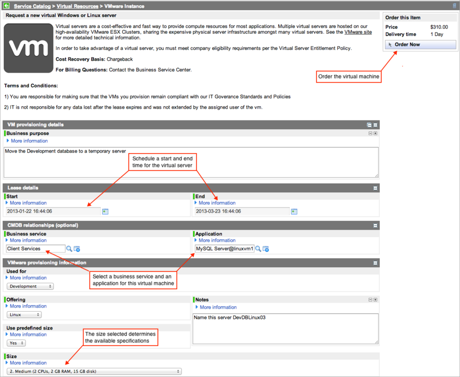

Requesting a VMware Instance for Cloud Provisioning
1 Overview
Users with the cloud_user role (Cloud Users group) can request a VMware virtual server from the ServiceNow service catalog. Requested virtual servers are subject to normal approvals and some special provisioning tasks. A workflow enables a user to make a service catalog request to terminate a virtual machine. Any virtual server created from a ServiceNow instance can be destroyed from that instance. This functionality requires the Orchestration - VMware Support plugin.
For role-based information about configuring and managing virtual machines in ServiceCenter, see Cloud Provisioning.
| |
Note: If you are using a version of ServiceNow earlier than Calgary, see previous version information in Requesting a Virtual Server - Versions Prior to Calgary. |
2 Administrators
For details about the tasks and roles required for provisioning virtual machines, see Cloud Operations.
3 Requesting a VMware Instance
Users requesting a VMware instance from the service catalog must have the cloud_user role.
- Navigate to Self-Service > Service Catalog > Virtual Resources.
- Select VMware Instance from the Virtual Resources category.
- The VMware Instance request form appears. By default the Quantity field does not appear on the service catalog form for VMware instances. ServiceNow does not support ordering multiple VMware instances in a single catalog request.
- In the Catalog Item form for this virtual server, complete the following fields:
- Business purpose: Enter a brief description of how this virtual server will be used.
- Start and End: Select the start and end times for this virtual machine lease. The lease start time is set automatically for the current date and time. In the base ServiceNow system, the lease end time is set to 60 days after the start time, and the maximum lease duration is limited to 90 days. The system does not allow requesters to set a lease end time beyond the configured limit. The lease duration is calculated from the time the virtual machine is actually provisioned, which occurs after the request is approved. If you request a virtual machine for now (the current date), and there is a delay in approval, the end date is reset according to the configured lease duration time.
- Business Service: Select the business service that depends on this virtual machine. When Orchestration creates the virtual server, it also creates the relationships to this business service in the CMDB.
- Application: Select the principal application that depends on this virtual machine, such as an exchange server or SQL Server database. When Orchestration creates the virtual machine, it also creates the relationships to this application in the CMDB.
- Used for: Select the purpose of this virtual machine. The categories in this choice list are found in the Business Service [cmdb_ci_service] table and also are used to define the categories in the VM provisioning rules. With the Dublin Release, ServiceNow does not automatically end the lease for virtual machines marked as Production. Instead, ServiceNow renews the lease on Production virtual machines automatically for the default lease duration and sends a notification to the requestor each time the lease is renewed.
- Offering: Select the offering—such as the operating system, database server, or web server—for the virtual machine you are requesting.
- Use predefined size: Select Yes to accept the default specifications for the operating system and size. Select No to define custom specifications for this virtual machine.
- Size: Select the predefined size for this offering that has the desired features (memory, storage, CPU speed).
- Notes: Add any information that the provisioners should know, such as the virtual machine's network name.
- The VMware order form looks like this:
- 
- Click Order Now.
- The view changes either to the My Virtual Assets portal or to the Order Status form, depending on how the service catalog is configured. The portal shows the various gauges associated with the logged in user's virtual assets and requests. To view the current request, click the request number in the My Virtual Asset Requests list or expand the Stage column to determine where the request is in the provisioning process.

- Bookmark this page and return to it to track the status of this request.
- You are notified by email of the results of your request. (Eureka) If the provisioning request fails for any reason, an incident is automatically created and assigned to the Cloud Administrators group (if the glide.vm.create_incident system property is enabled).

{kind=link}
{kind=link}
4 Terminating a Virtual Server
You can request the termination of a running VMware instance provisioned for you at any time during the lease by using the My Virtual Assets portal in the service catalog. When the virtual machine reaches the end of its lease or grace period, ServiceNow automatically terminates the instance without notice. With the Dublin release, virtual machines marked with a Used for value of Production do not automatically expire. You must manually terminate these virtual machines.